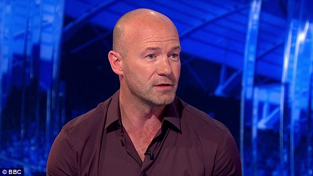

There is surely no argument against the fact that Alan Shearer is a legend of the Premier League era.
Not only that but again, surely no arguing against the point that he is also the greatest striker of this PL era.
Shearer scored 260 Premier League goals in total and indeed that would have been even higher if it counted the top tier goals he scored for Southampton, before the top division was rebranded.
The next highest is Wayne Rooney who was still 52 goals behind when heading off to the MLS, despite Man Utd being the most dominant team whilst he was playing.
Of the top 10 highest Premier League goalscorers, only one is still playing in the English top tier. That being Sergio Aguero who is 96 goals behind Shearer and with the Argentine striker turning 31 in June, surely no chance of him getting close to the Geordie legend.
What about as a leader though?
With Vincent Kompany hanging up his Premier League boots, BBC Sport have compiled seven candidates and asked which is the greatest ever PL leader?
To sum up how special he is, Shearer is the only one of the seven who is not a central defender or central midfielder. Strikers normally seen as more selfish and playing for themselves, rather than inspiring those around them.
Alan Shearer also was captain for club and country, such were his leadership qualities.
The other six nominations all from obvious clubs as well, whereas Alan Shearer stuck it out at the club he supported/supports, even in the toughest of times.
So is he the greatest Premier League leader…?
BBC Sport write-up on Alan Shearer and then the seven nominations:
‘Alan Shearer may not have won trophies at Newcastle but his decision to ignore the advances of all-conquering Manchester United to fulfil the dream of playing for his hometown club when he left Blackburn Rovers for £15m in 1998 cemented his place in the affections of all Geordies.
‘Shearer inherited the famous Newcastle number nine shirt worn by Jackie Milburn and Malcolm ‘Supermac’ Macdonald and performed with such quality, longevity and brilliance that he can comfortably take his place alongside any of the strikers of his generation.
As Newcastle’s captain, he literally led from the front.
‘He scored 206 goals in 404 appearances for Newcastle and is still the Premier League’s record goalscorer with 260 goals in 441 games.
‘He lived the dream of playing for his beloved club at St James’ Park, and every supporter who watched him in action on Tyneside will be grateful for the privilege.’